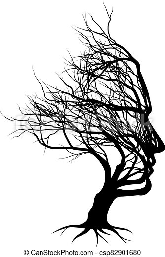

The illusion raju is born with power of the earths illusion .His parents were the zodiacs who were great illusionists. The illusion raju powers will be reduced because of the gravitational pull of the earth. He is summoned because of the darkness that is ruling the earth. He is very weak on earth surface but learnt new ways to overcome weakness and tackled the darkness with his illusion.
